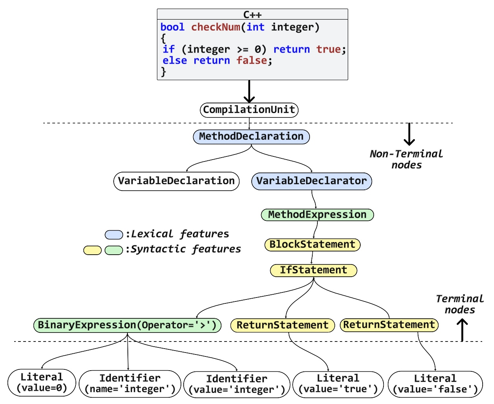

CYBERSECURITY ML · CODE INTELLIGENCE · TRANSFORMERS · DSN 2026
VulStyle
Multi-Modal Pre-Training for Code Stylometry-Augmented Vulnerability Detection
A software vulnerability detection model that jointly learns from source-code tokens, reduced non-terminal AST structure, and code-stylometry signals to capture not only what code says, but how it is written.
4.9MPre-Training Functions
7Programming Languages
5Vulnerability Benchmarks
95.06%BigVul F1
97.76%VulDeePecker F1
01 · THE PROBLEM
Token-only code models can miss the habits and structure behind risky implementations.
Existing vulnerability detectors often emphasize lexical tokens or expensive full program structures. VulStyle asks whether lightweight structural hierarchy and developer-style signals can complement token semantics and improve function-level vulnerability detection.
unsafe_buffer.c
char *copy(char *src) {
char buf[16];
strcpy(buf, src);
if (ptr != NULL) {
return process(ptr);
}
}02 · MULTI-MODAL CODE REPRESENTATION
Three signals. One vulnerability representation.
Each modality captures a different aspect of program behavior, making structure and stylometry complementary rather than interchangeable.
Function-Level Code
Lexical and local syntactic information expressed through the token sequence.
Non-Terminal AST Nodes
Structural hierarchy without the redundancy and cost of a complete flattened AST.
Code Stylometry
Statements, expressions, types, declarations, naming tendencies, and recurring implementation habits.
FUNCTION TOKENS+REDUCED AST+CSTYLE
→MULTI-MODAL VULNERABILITY REPRESENTATION
03 · VULSTYLE APPROACH
Pre-train broadly. Fine-tune with vulnerability-aware style signals.
VulStyle uses self-supervised masked-language pre-training and then augments labeled vulnerability functions with CStyle features during downstream fine-tuning.

Code + Reduced AST
Functions are parsed with Clang, non-terminal AST nodes are serialized, and the combined sequences train a RoBERTaBASE model using masked language modeling.
Code + CStyle Features
Vulnerable and non-vulnerable functions are enriched with extracted stylometric features before sequence classification.
Binary Vulnerability Detection
A classifier predicts whether a function is vulnerable or non-vulnerable.
04 · REDUCED AST + CSTYLE
Keep the hierarchy. Drop redundant leaf structure.
Instead of flattening the full AST, VulStyle retains non-terminal nodes to represent hierarchy more efficiently. During fine-tuning, selected syntactic and lexical nodes become CStyle features.
IfStatementReturnStatementBinaryOperation
PointerTypeMethodDeclarationVariableDeclarator

05 · PRE-TRAINING AT SCALE
Learning general code structure from millions of functions.
CodeSearchNet2.28M+
+
VulBERTa2.28M+
+
DiverseVul330K+
+
BigVul217K+
→ RoBERTa MLM Pre-Training
06 · BENCHMARK RESULTS
Strong performance across five vulnerability benchmarks.
VulStyle achieved state-of-the-art results on BigVul and VulDeePecker and competitive or best-average performance across the broader benchmark suite.
BIGVUL F1 COMPARISON
VulStyle vs. strong baselines
07 · ABLATION STUDY
The gain comes from the combination—not one modality alone.
On BigVul, reduced AST structure and CStyle each improve the token-only baseline, but the full multi-modal model delivers the largest increase.
47.06%Weak generalization
58.55%Structure helps
61.02%Style detects behavior
95.06%Full VulStyle
AST
+CStyle
+Tokens
→ complementary signals
08 · THREAT MODEL & SECURITY CONTEXT
Designed around attacker-realistic code changes.
The threat model considers vulnerable functions entering a codebase through patches, pull requests, or supply-chain updates, with the defender aiming to flag unsafe contributions early in CI/CD or pre-commit review.
ATTACKERPatch / PR / Dependency Update
→
CODEBASENew Function
→
VULSTYLETokens + AST + Style
→
DEFENDERCI/CD Review
Unsafe buffer handling
Mixed naming patterns and nested unsafe blocks provide stylometric and structural cues that help flag a vulnerable function missed by token baselines.
Semantic flaw with normal style
Cryptographic misuse, integer overflow, or race conditions can remain difficult when the code looks stylistically normal.
09 · LIMITATIONS
Benchmark strength does not remove real-world uncertainty.
Label noise
Widely used vulnerability datasets can contain noisy or inconsistent labels, so absolute scores should be interpreted carefully.
Function-level scope
The current model does not represent inter-procedural data flow, global state, or cross-function dependencies.
Uniform / generated style
Stylometric signals weaken when code is auto-formatted, templated, or machine-generated.
Deep semantic flaws
Some vulnerabilities require stronger semantic, symbolic, or compiler-assisted reasoning beyond style and local structure.
10 · ACCEPTED RESEARCH
VulStyle: A Multi-Modal Pre-Training for Code Stylometry-Augmented Vulnerability Detection
CYBERSECURITY ML · CODE REPRESENTATION · SOFTWARE SECURITY